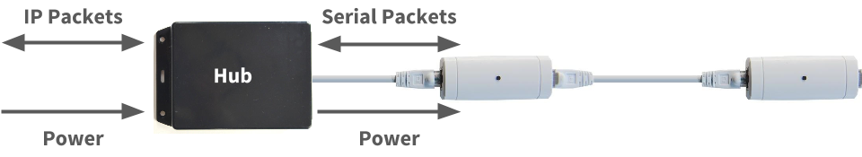
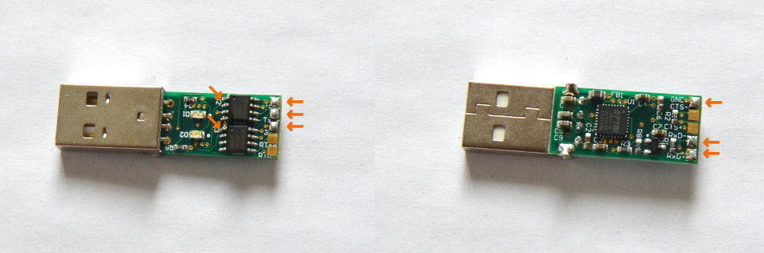
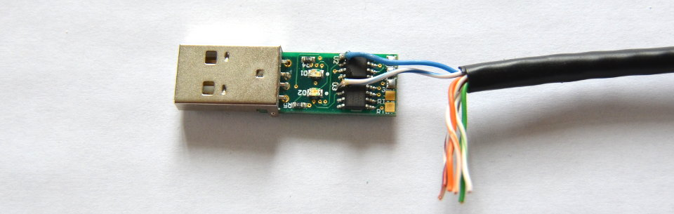
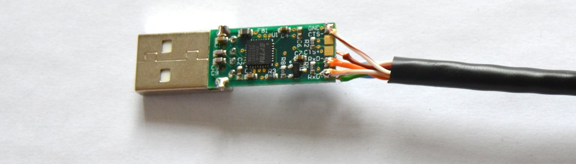
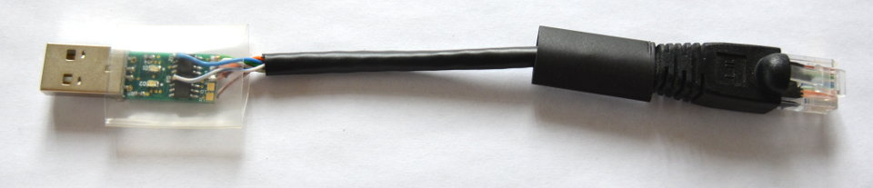
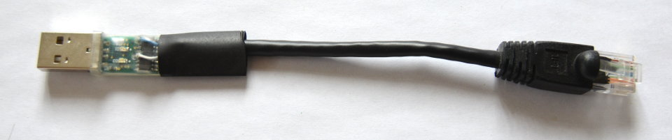
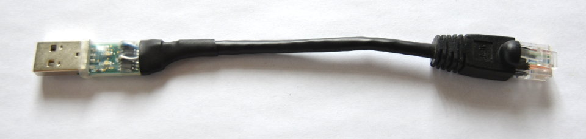

Build your own hub
In order for reelceivers to communicate their data over a network and/or the Internet, they need to connect via a hub.
The hub converts their serial data packets into IP data packets. Some hubs may instead convert the serial data packets into some other format that a computer can, in turn, convert to IP packets. The hub also provides power to the reelceivers. We include a hub with our starter kits for out-of-the-box connectivity, but with basic tools and a little bit of effort, you can enjoy building your own hub. In this tutorial, we'll show you how!
Build a USB hub
Here you'll learn how to build a USB hub which allows you to connect a reel directly to your computer, server, Raspberry Pi or anything with USB host capability. This is arguably the quickest, easiest and most cost-effective way to connect a short reel to a computing device. The only limitation is the 5VDC power supplied by the USB port: don't expect to connect dozens of reelceivers over hundreds of metres! But with a good USB port, you might successfully connect a few reelceivers over tens of metres.

Here are the parts you'll need:
- a Cat5 cable with one RJ-45 connector (i.e. an "Ethernet" cable cut in half)
- an FTDI USB-RS422-PCB board (buy on DigiKey)
- (recommended) a 2-3cm diameter clear shrink tube cut to 3cm length
- (recommended) a 1-1.5cm diameter opaque shrink tube cut to 2.5cm length
You'll also need the following tools:
- a soldering iron
- some solder
- wire cutters and strippers (or simply a knife)
- a heat gun (or hair dryer, or lighter...)
First, slip the opaque shrink tube onto the Cat5 cable. Seriously, do this first because otherwise you'll forget and then regret your mistake after you've started soldering... We're speaking from experience here! Then trim off about 2cm of the sheathing.
Add a touch of solder to the six indicated pads on the board. Also add a touch of solder to Pin 1 of each of the 8-pin ICs, as also indicated by the little orange arrows.
Strip 1-2mm off the blue pair of wires and solder one to each Pin 1 of those 8-pin ICs. The blue pair carry the positive voltage of the reel which in this case will be around 5VDC. Take care not to short them with any other pins!

Trim the green pair of wires and one of the brown wires so that they meet the pads shown above without bending. Then strip 1-2mm off each. Solder them to their respective pads, from top to bottom in the above image the order is:
- solid green
- green/white
- brown or brown/white (doesn't matter)
The green pair carry the serial data from the hub to the reel. Note that this is the most meticulous part of the whole operation. It helps if you can secure the board in a vise. Don't worry, after this, it's smooth sailing.
Flip the board and trim the orange pair of wires and the other brown wire so that they meet the pads shown above without bending. Then strip 1-2mm off each. Solder them to their respective pads, from top to bottom in the above image the order is:
- brown or brown/white (doesn't matter)
- solid orange
- orange/white
The orange pair carry the serial data from the reel to the hub. The brown pair carry ground, hence their order doesn't matter.
Now you (should) have a functional USB hub! This is a good time to test it out with the Barnowl Baby Steps tutorial. If the hub works we can move on to the fun part of shrink tubing it which protects against shorts and acts as a strain relief.
Place the clear shrink tubing over the assembly so that about 2mm overlaps with the USB connecter. Then blast it with the heat gun so that it makes a nice snug fit. We selected clear shrink wrap so that the LEDs remain visible.
Slide the opaque shrink tubing over the assembly so that it overlaps both the board and the sheathed part of the Cat5 cable. Then blast it too with the heat gun so that it makes a nice snug fit.
Congratulations, you've got yourself a USB hub!
What's next?
Check out the other tutorials on diyActive to make good use of your new hub. You can also refer to the barnowl documentation to learn more about how to configure your hub for your operating system. Also, if you build your own unique hub and would like to share your project, please get in touch!